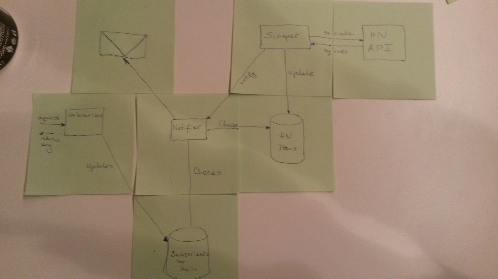

Async While Loop
The Node Mistiques
Powered by Dobata / @putzmitt3l
Creating a HackerNews mail-notification Node app

Three part architecture
...well actually four but who is counting the DBSubscriber server
handles the subscribtion requests
saves subscribers object in our so-called DB
sends an object containing the objects generated ID
HACKERNEWS "SCRAPER"
(the thing that we are gonna take a closer look now)makes periodic calls to the HN API to check if some new stuff is going down
if new stuff is going down, saves the feed changes in the DB
finally notifies the "notifier"
NOTIFIER
gets all the DB objects
makes a search on the subscribers collections and feed collections
decides which user is interested in what feed and creates combos of them
mails the info via some mailing Node module

Simple right ??? ...
What are we going to try for the next ... remaining minutes?
Recreate my thought process @ 2a.m. in the morning
...and yes, I do have one
One constraint on the solution we must come up with.(and that indeed is the topic of this presentation)

The HN API provides several core things we will take advantage of
So the API functionality brings us a pretty interesting task to accomplish. We have to synchronously execute asynchronous (obviously) requests. And we must execute that in a "poll-like" fashion.
Coding time
Fin